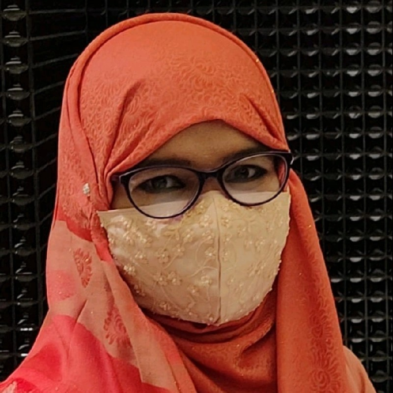

MBBS, FCPS (Part I), MS (Plastic Surgery)
Assistant Professor, National Institute of Burn and Plastic Surgery
A specialist in advanced reconstructive and burn surgery. Her practice encompasses:
Dedicated to surgical excellence through evidence-based practice, focusing on:
Journal: International Surgery Journal | Nov 2025
Prospective study at NIBPS evaluating flap survival and functional results, highlighting a 90.9% success rate for ALTFF in oral cavity reconstruction.
View Journal Article (DOI)Bangabandhu Sheikh Mujib Medical University (BSMMU)
Bangladesh College of Physicians and Surgeons (BCPS)
Rajshahi Medical College
Singra Damdama Pilot School and College — GPA 5.00 in both examinations.
National Institute of Burn and Plastic Surgery (NIBPS)
National Institute of Burn and Plastic Surgery
National Institute of Burn and Plastic Surgery
Bagmara UHC, Rajshahi (33rd BCS Health)
Rajshahi Medical College Hospital
Email: nabinamostafiz@gmail.com